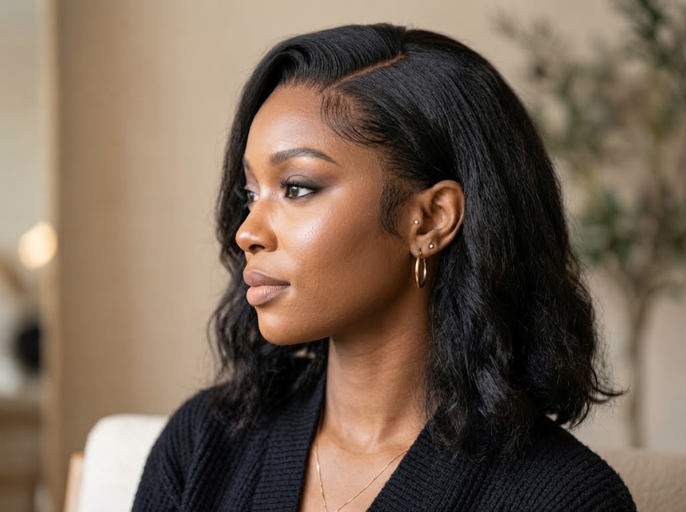
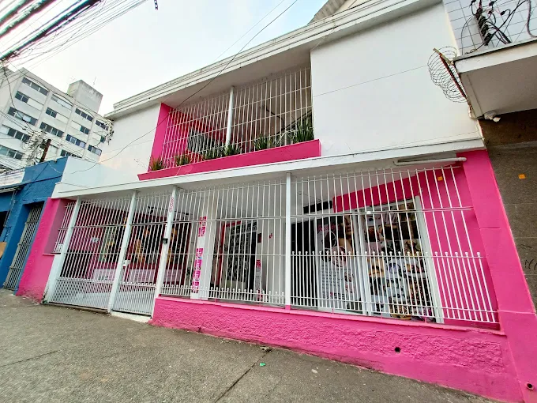

Perucas Humanas
Wigs e Front Laces em cabelo humano selecionado. Movimento, caimento e naturalidade de alto padrão.
Ver modelos →Especialistas em perucas humanas, orgânicas, front laces e apliques. Trabalhamos com personalização sob medida, aplicação segura e finalização visagista em nosso espaço privativo na Liberdade.

A Realize não é simplesmente uma loja de revenda. Oferecemos um serviço técnico completo, cuidando de cada detalhe com você.
Da seleção da peça aos cortes de acabamento, você conta com especialistas experientes para garantir um encaixe imperceptível e o máximo conforto — seja no nosso espaço acolhedor na Liberdade, seja no seu próprio endereço.
Peças exclusivas combinadas com procedimentos técnicos de personalização, corte e finalização.
Wigs e Front Laces em cabelo humano selecionado. Movimento, caimento e naturalidade de alto padrão.
Ver modelos →Fibra premium resistente ao calor com textura similar ao cabelo natural. Estilo e custo-benefício.
Ver modelos →Apliques, rabos de cavalo e franjas postiças para volume e comprimento instantâneos.
Ver opções →A Realize Perucas é uma empresa familiar conduzida com dedicação técnica pelas proprietárias Taluana, Daniela e Victoria, localizada no tradicional bairro da Liberdade, em São Paulo.
Não vendemos apenas cabelos: proporcionamos segurança, conforto emocional e autoestima restaurada para milhares de mulheres.
Conheça nossa história completa →
Nossas consultoras estão prontas para te ouvir, explicar cada técnica e agendar sua avaliação no nosso espaço exclusivo na Liberdade.